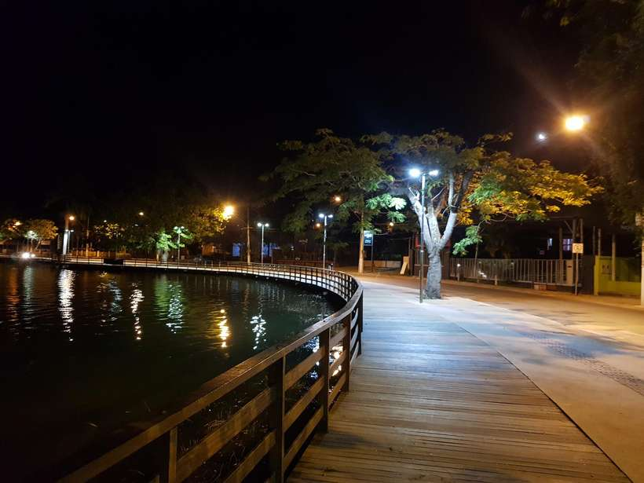

Moradores de Lagoa Santa relatam noite de apagão e piques de energia
Moradores de diversos bairros dos lados oeste e leste de Lagoa Santa, na Região Metropolitana de Belo Horizonte, relataram que na noite dessa segunda-feira (13/9), ocorreram vários piques de energia e horas de escuridão, que chegou a durar cerca de quatro horas. O medo tomou conta da população, que temia perder os aparelhos eletrodomésticos.
No bairro Palmital, a moradora Natália Barbosa conta que por volta de 18h até 20h30, foram cinco piques de energia seguidos de apagões. A terapeuta só não perdeu os aparelhos eletrodomésticos porque no momento estava em casa e conseguiu correr para desligar tudo das tomadas.
Na casa de André Guimarães, morador do Conjunto Habitacional Ovídeo Guerra, no lado Oeste da cidade, foram nove piques de energia e o fornecimento, segundo ele, só foi normalizado às 22h.
Com medo de perder os eletrodomésticos, o marceneiro conta que ligou para a Cemig logo no início dos piques e a empresa ainda não estava ciente do que estava acontecendo na cidade. André afirma que mora no bairro há 32 anos e que nunca tinha presenciado tantas horas de apagões.
“Isso só acontece quando chove, aí a energia cai mesmo. Mas da maneira que foi ontem nunca vi acontecer”, disse.
A Cemig afirma que assim que detectou a falha, iniciou manobras de transferências de cargas para equilibrar novamente o sistema, o que foi feito e concluído por volta das 20h30 de segunda-feira.
Em relação ao risco de apagões, a empresa afirma que não há esse risco na cidade e que a falha no fornecimento de energia foi pontual e corrigida.
Fonte do texto alterado: Estado de Minas